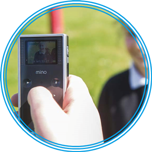
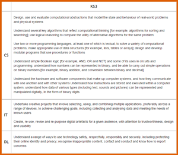
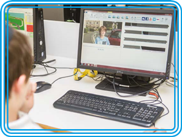

BBC Bitesize Computer Science Homepage
The London Grid for Learning "History Of Computing" offers a full range of Ks3-4 resources and cross curricular resources to provide context and reality to themes and concepts
The Curriculum Central area of the LGfL offers a statement by statement link set to access content to support the teaching of each statement
The LGfL Computing Homepage offers links to resources, policy and support for the delivery of computing in your school
The LGfL Content pages identify tools and resources available to teachers and schools in London that can support the teaching of computing and technology led learning
Getting Started
There is flexibility in the way you can deliver the computing programme of study but you should plan to cover the whole curriculum ? and in many areas to go beyond it.?
In the programme of study document, the curriculum for each key stage is expressed as a series of bullet points. The order of these points does not denote their significance, nor should it influence the sequence of your teaching. The amount of time given to any one aspect is up to you. However, it would be unwise to ignore one strand or give too much emphasis to one aspect to the detriment of the others. How you deliver the course content remains in your hands.1?
The introduction to the programme of study clearly identifies the three strands within computing.
The core of computing is computer science, in which pupils are taught the principles of information and computation, how digital systems work, and how to put this knowledge to use through programming. Building on this knowledge and understanding, pupils are equipped to use information technology to create programs, systems and a range of content. Computing also ensures that pupils become digitally literate ? able to use, and express themselves and develop their ideas through, information and communication technology ? at a level suitable for the future workplace and as active participants in a digital world.2
The aims of computing as a whole also reflect the distinction between the three strands.
- [All pupils] can understand and apply the fundamental principles and concepts of computer science, including abstraction, logic, algorithms and data representation (CS)
- [All pupils] can analyse problems in computational terms, and have repeated practical experience of writing computer programs in order to solve such problems (CS)
- [All pupils] can evaluate and apply information technology, including new or unfamiliar technologies, analytically to solve problems (IT)
- [All pupils] are responsible, competent, confident and creative users of information and communication technology. (DL)
The first two of these aims illustrate that computer science has two distinct, but related, aspects. There?s a focus on the ideas and principles that underpin computation, and how digital technology works, and this sits alongside the experience of programming ? almost certainly the best way for pupils to learn how to apply computer science.
A quick scan of the subject content for KS3 shows expectations for computer science, IT and digital literacy. On the next page, the KS3 content has been adapted opposite to show how it can be viewed in terms of these three strands.
We will look in more detail at the KS3 and KS4 programmes of study later in the booklet.

| KS3 | |
| CS | Design, use and evaluate computational abstractions that model the state and behaviour of real-world problems and physical systems |
| IT | Undertake creative projects that involve selecting, using, and combining multiple applications, preferably across a range of devices, to achieve challenging goals, including collecting and analysing data and meeting the needs of known users Create, re-use, revise and re-purpose digital artefacts for a given audience, with attention to trustworthiness, design and usability |
| DL | Understand a range of ways to use technology safely, respectfully, responsibly and securely, including protecting their online identity and privacy; recognise inappropriate content, contact and conduct and know how to report concerns |
At first glance, the KS3 subject content appears to be weighted towards the computer science strand. In fact, there is considerable overlap between the three strands, and these labels are just placeholders, based on where we believe the principal emphasis lies. The statutory requirements are intentionally not labelled under any headings in the programme of study. When planning a scheme of work it is best to avoid categorising by strand, for instance, by saying, "Today, we are doing IT". Instead, you should aim to devise activities that include all three strands and cover the content in a balanced, stimulating and creative way.
There are big changes in assessment, as with other national curriculum subjects. The old system of levels has been abolished and is not being replaced. How your school chooses to assess, record and report pupils' mastery of the curriculum content is your decision. We explore some options in the Assessment section of the booklet.
A final thought: every core principle can be taught or illustrated without relying on the use of a specific technology ? or indeed any technology at all ? and the increasing range of unplugged activities should be considered as part of a balanced delivery. 